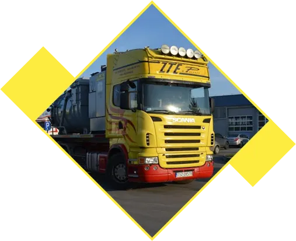
01Transport ciężki i ponadgabarytowy
Ładunki ciężkie i ponadgabarytowe, maszyny robocze, materiały sypkie. Zestaw niskopodwoziowy, patelnie, samochody samowyładowcze, kontenery.
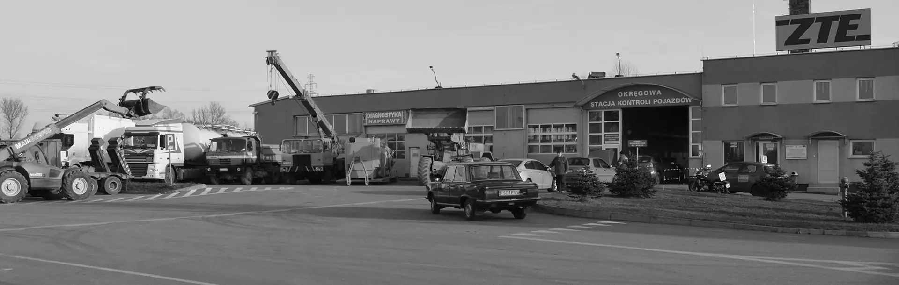
Przewozimy ładunki ciężkie i ponadgabarytowe, wynajmujemy maszyny z operatorem i wykonujemy roboty inżynieryjne: obwałowania składowisk, zbiorniki retencyjne, drogi i place.
Kluczowa część naszej pracy to przewóz ładunków ciężkich i ponadgabarytowych oraz usługi ciężkim sprzętem budowlanym. Realizujemy przetargi dla jednostek samorządu i zlecenia prywatnych inwestorów.

01Ładunki ciężkie i ponadgabarytowe, maszyny robocze, materiały sypkie. Zestaw niskopodwoziowy, patelnie, samochody samowyładowcze, kontenery.
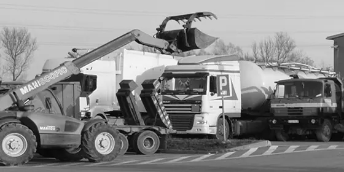
02Koparki, minikoparki, ładowarki, spychacze, walce, ciągniki, kosiarki i zagęszczarki. Maszyna przyjeżdża razem z operatorem.
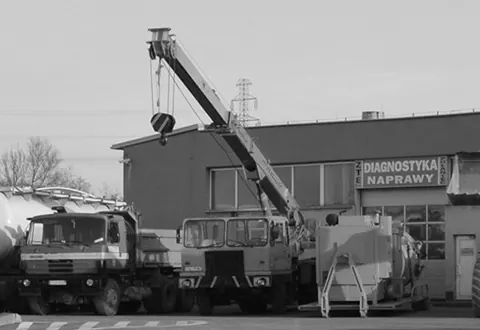
03Obwałowania składowisk odpadów paleniskowych i gipsu, zbiorniki retencyjne, czyszczenie osadników, drogi i place, rozbiórki budowli przemysłowych, boiska, rekultywacja.
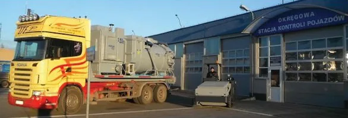
04Bezpyłowa zamiatarka i jednostka ssąca do pracy w strefach zagrożenia wybuchem. Sprzęt kupiony z dofinansowaniem Unii Europejskiej.
Zakup biomasy roślinnej i drzewnej, transport i przeładunek, także w big bagach. Obsługa procesów przeróbki i spalania biomasy.
Transport i sprzedaż kruszyw drogowych i budowlanych, piasku i ziemi. Sprzedaż lub wynajem płyt żelbetowych.
Czyszczenie i odmulanie rowów, koszenie poboczy, utrzymanie terenów zielonych. Dla gmin, zarządców dróg i zakładów.
Odbiór złomu wielkogabarytowego z dojazdem, skup metali kolorowych, indywidualna wycena. Zezwolenie na transport odpadów.
Zaznacz, czego potrzebujesz. Na bieżąco powstaje gotowa karta zapytania, która trafia od razu do właściwej osoby w ZTE, a nie do ogólnej skrzynki.
Wybierz grupę i dodaj maszyny do zapytania jednym kliknięciem. Pracujemy z Urzędem Dozoru Technicznego przy obsłudze żurawi, podnośników i ciężkiego sprzętu.
Na terenie Elektrowni Połaniec mamy nieruchomości o powierzchni 1,82 ha: halę i trzykondygnacyjny budynek, który można zaadaptować na cele biurowe, warsztatowe, produkcyjne lub laboratoryjne. Położenie przy linii kolejowej zaopatrującej Elektrownię to duży atut logistyczny.
Przy trasie krajowej 79 Kraków - Sandomierz. Klienci Okręgowej Stacji Kontroli Pojazdów dostają 5% rabatu na wszystkie części w naszym sklepie.
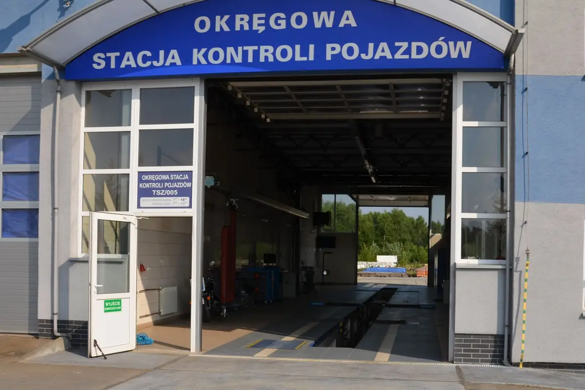
Badania wszystkich pojazdów na nowoczesnej linii diagnostycznej: osobowe, ciężarowe, autobusy, ciągniki, przyczepy i naczepy, ADR, taxi, nauka jazdy, zabytkowe, pojazdy sprowadzone i SAM. Badania po kolizji, hak, VAT, nabijanie VIN, sprawdzenie auta przed zakupem.
pn-pt 7:00-19:00 · sob 7:00-15:00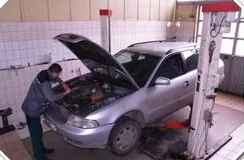
Zawieszenie, hamulce, rozrząd, sprzęgła, głowice, diagnostyka komputerowa, geometria kół. Także motocykle i maszyny.
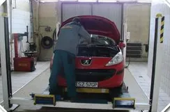
Serwis klimatyzacji urządzeniem COOLIUS 1000 z drukowanym raportem, ozonowanie. Wymiana, wyważanie i przechowywanie opon.
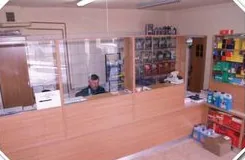
Oleje, filtry, płyny, części i narzędzia. Zamówienia złożone do 12:00 realizujemy nawet w kilka godzin.
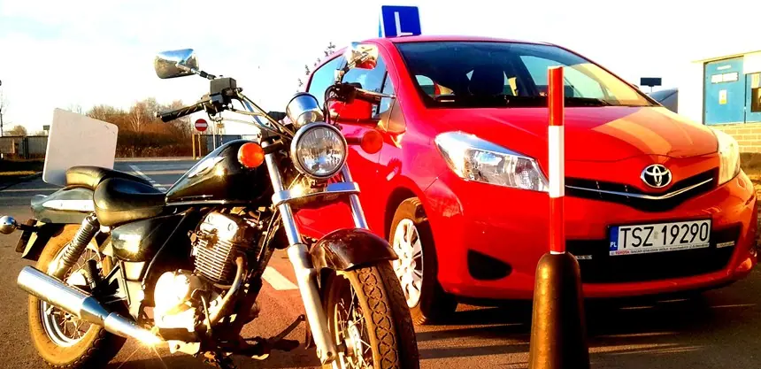
Kursy prawa jazdy kategorii B i jazdy doszkalające. Elastyczne terminy zajęć.
Bezpłatna wycena, odbiór auta lawetą, dokumenty do wyrejestrowania, sprzedaż części z demontażu. Skup złomu i metali kolorowych.
Obowiązkowe badania opryskiwaczy polowych i sadowniczych. Na życzenie dojeżdżamy: powiat staszowski i ościenne.
Zakład Transportu Energetyki w Połańcu Sp. z o.o. powstał w kwietniu 1999 roku na bazie Zakładu Transportu Energetyki s.c., z doświadczeniem zdobytym w Państwowym Zakładzie Transportu i Energetyki Radom, Oddział Terenowy Połaniec.
nr 000987200275/F4/02 · 00290/F4/02OŚ.6233.1.2012.IIICTDT-P-323/10DK-610-10/2000SGS/KZR/BIO/0490/1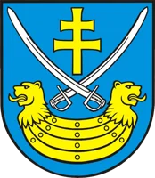
Tytuł Lidera Ekologii Powiatu Staszowskiego w 2012 i 2014 roku za wsparcie i realizację inicjatyw związanych z wdrażaniem nowoczesnej gospodarki odpadami.
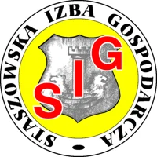
ZTE w Połańcu to wyróżniona firma, która wdrożyła nowoczesne systemy zarządzania jakością, środowiskiem i bezpieczeństwem.
Podziękowania za sfinansowanie zakupu sprzętu sportowego dla uczniów naszej szkoły.
ul. Osiecka 34, 28-230 Połaniec, przy trasie krajowej 79 Kraków - Sandomierz. Zapytania ofertowe przyjmujemy także przez sekretariat.